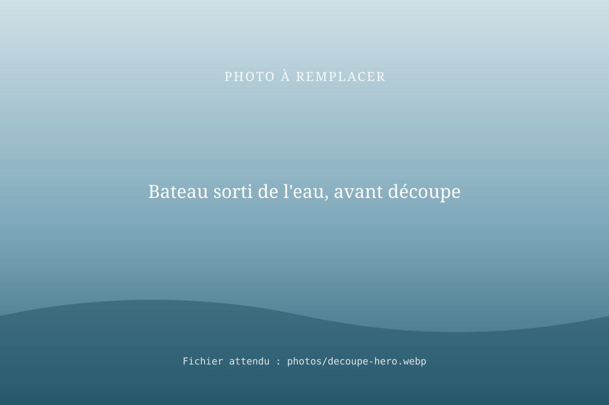
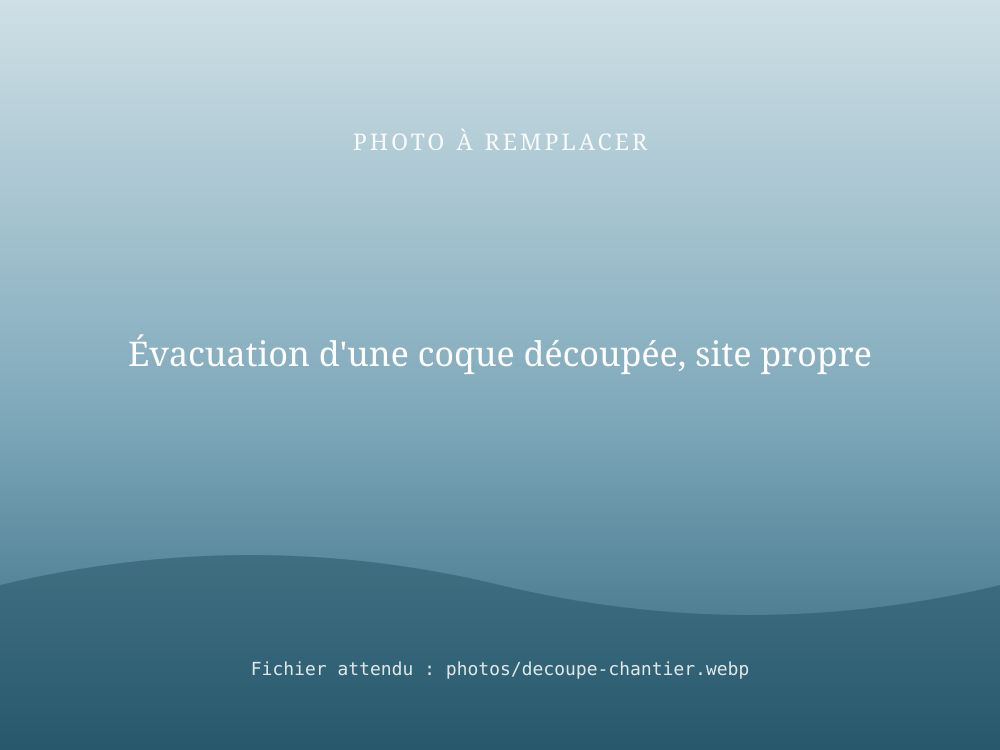

Découpe de bateau : déconstruire proprement un bateau en fin de vie
RivesEnRêves a déjà réalisé des opérations de découpe de bateaux : déconstruction de bateaux en fin de vie, évacuation de coques et d'épaves. Nous libérons votre place de port ou votre terrain, proprement et en sécurité.

Quand faire appel à nous ?
- Votre bateau est trop abîmé pour être réparé.
- Une coque occupe votre place de port ou votre terrain depuis des années.
- Votre bateau a été renfloué mais n'est pas récupérable.
Comment ça se passe ?
- Visite ou photos
Taille, matériau, emplacement, accès.
- Devis
Méthode (à flot, sur berge, après sortie d'eau) et évacuation.
- Découpe et évacuation
Intervention en sécurité, site laissé propre.

Questions fréquentes
Que faire d'un bateau qui ne navigue plus ?
S'il n'est ni réparable ni vendable, il doit être déconstruit. RivesEnRêves réalise la découpe du bateau et l'évacuation de la coque, pour libérer votre place de port ou votre terrain.
Peut-on découper un bateau sur place, sur l'eau ?
Selon la situation, la découpe peut se faire à flot, sur berge ou après sortie de l'eau. Nous étudions l'accès et la méthode la plus sûre lors du devis.
Combien coûte la découpe d'un bateau ?
Le prix dépend de la taille et du matériau du bateau, de son emplacement et de l'évacuation des déchets. Demandez un devis en joignant des photos.
Un bateau à déconstruire ?
Envoyez-nous le type de bateau, sa longueur, son emplacement et quelques photos.